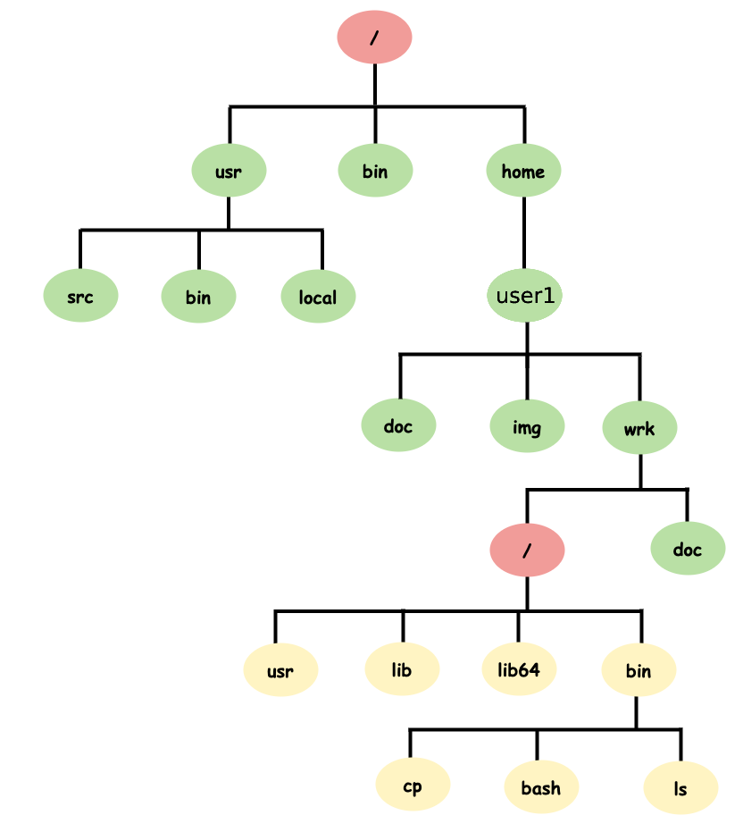
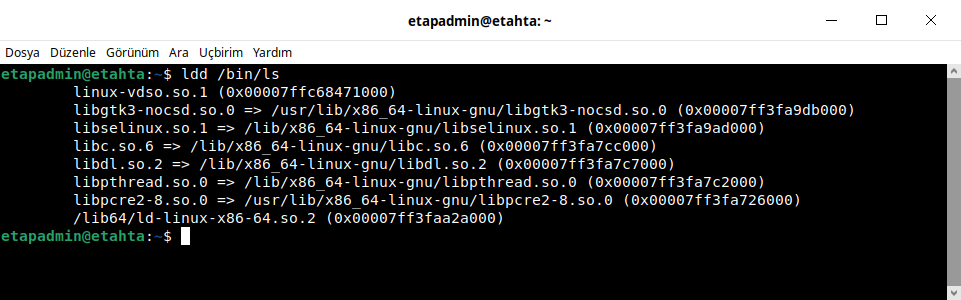

Chroot Nedir?¶
chroot komutu çalışan sistem üzerinde belirli bir klasöre root yetkisi verip sadece o klasörü sanki linux sistemi gibi çalıştıran bir komuttur. Sağladığı avantajlar çok fazladır. Bunlar;

Sistem tasarlama
Sitem üzerinde yeni dağıtımlara müdahale etme ve sorun çözme
Kullanıcı kendine özel geliştirme ortamı oluşturabilir.
Yazılım bağımlıkları sorunlarına çözüm olabilir.
Kullanıcıya sadece kendisine verilen alanda sınırsız yetki verme vb.
{kind=link}
Yukarıdaki resimde user1 altında wrk dizini altına yeni bir sistem kurulmuş gibi yapılandırmayı gerçekleştirmiş.
/home/user1/wrk dizinindeki sistem üzerinde sisteme erişmek için;
sudo chroot /home/user1/wrk #sisteme erişim yapıldı.
/home/user1/wrk dizinindeki sistem üzerinde sistemi silmek için;
sudo rm -rf /home/user1/wrk #sistem silindi
Yeni sistem tasarlamak ve erişmek için temel komutları ve komut yorumlayıcının olması gerekmektedir. Bunun için bize gerekli olan komutları bu yapının içine koymamız gerekmektedir. Örneğin ls komutu için doğrudan çalışıp çalışmadığını ldd komutu ile kontrol edelim.
{kind=link}
Görüldüğü gibi ls komutunun çalışması için bağımlı olduğu kütüphane dosyaları bulunmaktadır. Bağımlı olduğu dosyaları yeni oluşturduğumuz sistem dizinine aynı dizin yapısında kopyalamamız gerekmektedir. Bu dosyalar eksiksiz olursa ls komutu çalışacaktır. Fakat bu işlemi tek tek yapmamız çok zahmetli bir işlemdir. Bu işi yapacak script dosyası aşağıda verilmiştir.
Bağımlılık Scripti¶
lddscript.sh
#!/bin/bash
if [ ${#} != 2 ]
then
echo "usage $0 PATH_TO_BINARY target_folder"
exit 1
fi
path_to_binary="$1"
target_folder="$2"
# if we cannot find the the binary we have to abort
if [ ! -f "${path_to_binary}" ]
then
echo "The file '${path_to_binary}' was not found. Aborting!"
exit 1
fi
echo "---> copy binary itself" # copy the binary itself
cp --parents -v "${path_to_binary}" "${target_folder}"
echo "---> copy libraries" # copy the library dependencies
ldd "${path_to_binary}" | awk -F'[> ]' '{print $(NF-1)}' | while read -r lib
do
[ -f "$lib" ] && cp -v --parents "$lib" "${target_folder}"
done
Basit Sistem Oluşturma¶
Bu örnekte kullanıcının(etapadmin) ev dizinine(/home/etapadmin) test dizini oluşturuldu ve işlemler yapıldı. ls, rmdir, mkdir ve bash komutlarından oluşan sistem hazırlama.
Sistem Dizinin Oluştrulması¶
mkdir /home/etapadmin/test/ #ev dizinine test dizini oluşturuldu.
/home/etapadmin/ dizinine Bağımlılık Scripti kodunu lddscripts.sh oluşturalım.
ls Komutu¶
bash lddscripts.sh /bin/ls /home/etapadmin/test/ #komutu ile ls komutunu ve bağımlılığı kopyalandı.
{kind=link}
Bu işlemi diğer komutlar içinde sırasıyla yapmamız gerekmektedir.
rmdir Komutu¶
bash lddscripts.sh /bin/rmdir /home/etapadmin/test/ #komutu ile rmdir komutunu ve bağımlılığı kopyalandı.
{kind=link}
mkdir Komutu¶
bash lddscripts.sh /bin/mkdir /home/etapadmin/test/ #komutu ile mkdir komutunu ve bağımlılığı kopyalandı.
{kind=link}
bash Komutu¶
bash lddscripts.sh /bin/bash /home/etapadmin/test/ #komutu ile bash komutunu ve bağımlılığı kopyalandı.
{kind=link}
chroot Sistemde Çalışma¶
sudo chroot /home/etapadmin/test komutunu kullanmalıyız.
{kind=link}
abc dizini oluşturuldu.
abc dizini silindi.
pwd komutuyla konum öğrenildi.
ldd komutu sistemimizde olmadığından hata verdi.
Çıkış için ise *exit* komutu kullanılarak sistemden çıkıldı.
Kaynak: https://stackoverflow.com/questions/64838052/how-to-delete-n-characters-appended-to-ldd-list